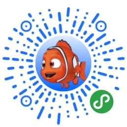
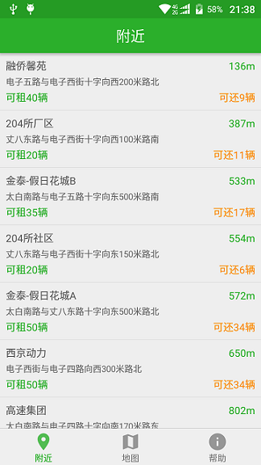
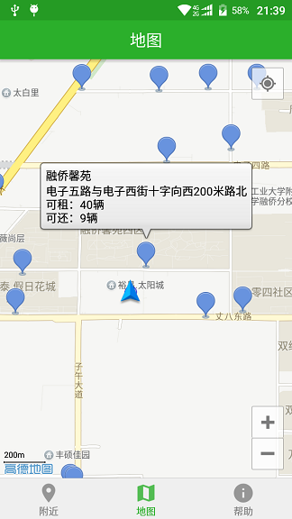

一起来玩 3D滚蛋吧看谁滚得远
造福鱼友：欢迎使用 养鱼小助手
玩DOTA2，查英雄，查物品，查技能，查天梯排行 DOTA2英雄技能物品天梯助手 应有尽有
手机上的文字发到电脑上？电脑上的文字发到手机上？最简单的方式：使用 跨平台剪切板即可
并提供小程序版本
开源、纯净、无广告；省电、安全、不推送；适配安卓2.3至安卓7.1的纯净版西安自行车网点查询来了，还你一个简单纯净的出行APP，立即下载 西安公共自行车
 开放源码： https://github.com/wangyucode/XiAnBike
JavaFX技术实现的五子棋，可以局域网对局，可以聊天，可以自动判定胜负，可以悔棋，总代码不超过1000行，编译后仅18KB

开放源码： https://github.com/wangyucode/FiveChess